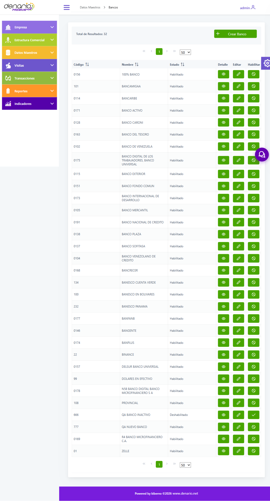
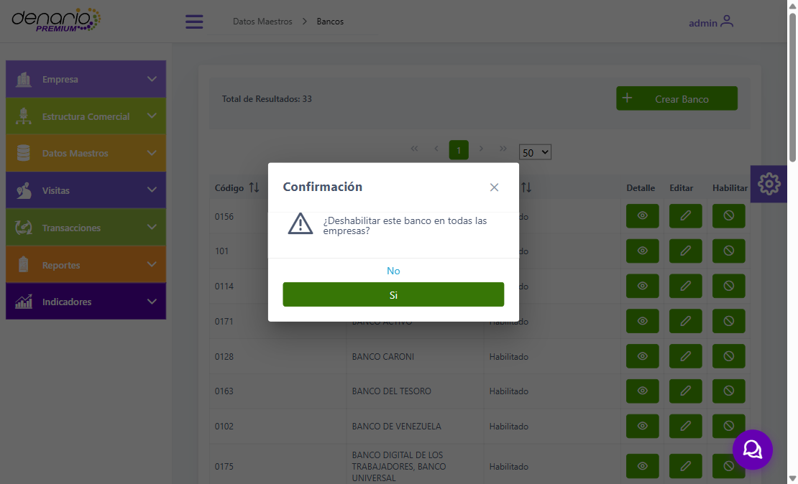
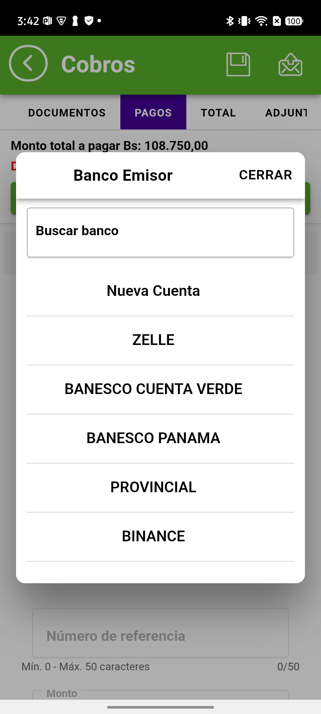
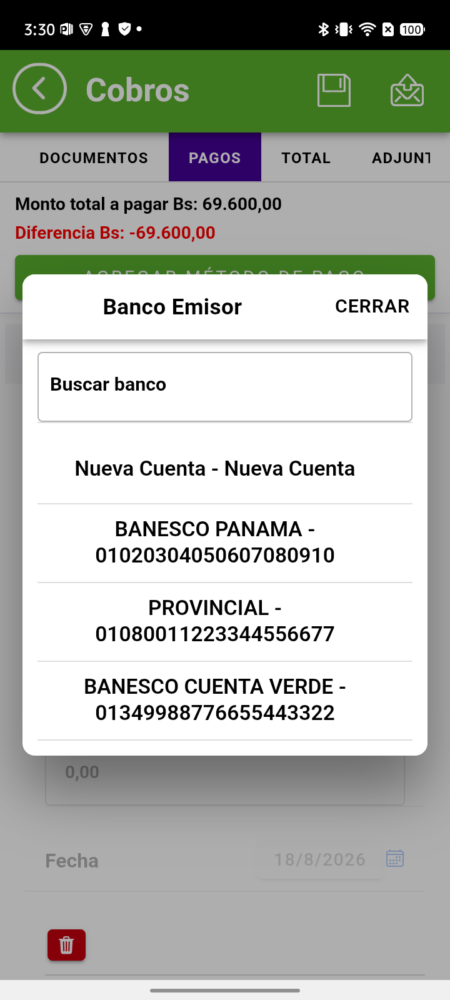
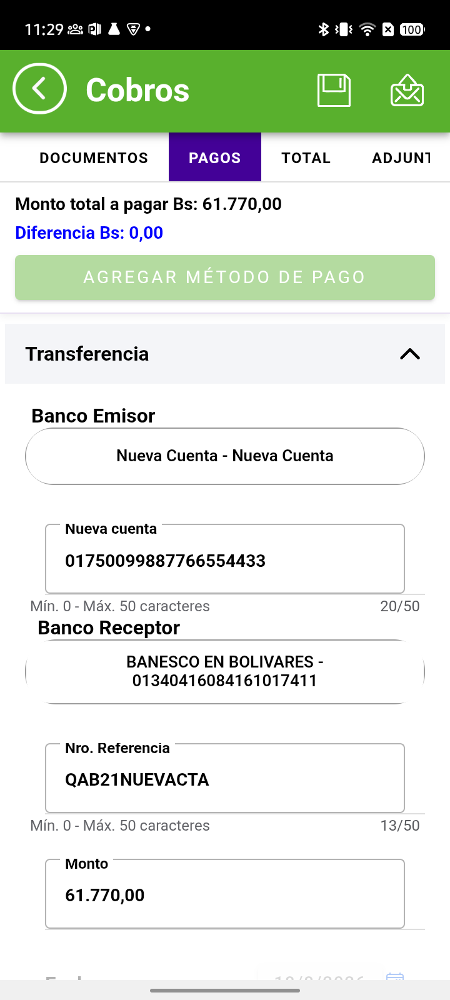
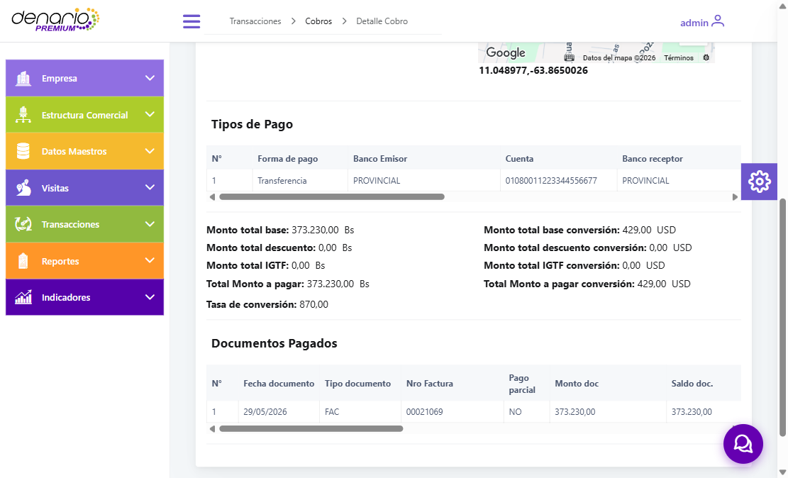

GUÍA DE USODenario Premium
Septiembre 2026
Septiembre 2026
Cómo administrarlo desde la web y cómo lo usa el vendedor en la aplicación móvil
La pantalla está en Datos Maestros → Bancos. Muestra el código, el nombre y el estado de cada banco, y desde ahí se hace todo.
Al entrar verá todos los bancos registrados, con su código, su nombre y si está habilitado o no.
La lista tiene buscador y paginación, de modo que puede ubicar un banco por su nombre o por su código sin recorrerla entera.

Con el botón Crear Banco se abre el formulario. Escriba el código y el nombre, y guarde.
Si intenta guardar sin llenar los datos, el sistema se lo indica con «Campo obligatorio.» y no crea nada.
El banco queda registrado para su empresa y aparece de inmediato en la lista.

El botón Editar permite corregir el nombre de un banco ya registrado.
El código no se puede modificar desde la web: aparece bloqueado. Es a propósito, porque el código es lo que enlaza el banco con los cobros que ya se hicieron con él. Si necesita corregirlo, comuníquese con soporte Denario.
Al guardar, el nombre nuevo se refleja en la lista sin crear un registro duplicado.

Cuando un banco deja de usarse, el botón Deshabilitar lo retira de la aplicación móvil. El sistema pide confirmación antes de aplicarlo.
No se borra nada. El banco queda marcado como deshabilitado y sigue registrado, de modo que los cobros hechos con él conservan su información.
En la lista pasa a mostrarse como Deshabilitado, y el botón cambia a Habilitar por si necesita volver a activarlo más adelante.

Después de registrar o modificar un banco, el vendedor solo debe sincronizar desde la pantalla principal de la aplicación. En pocos segundos tendrá el catálogo actualizado.
Al registrar un cobro, el banco se selecciona en el campo Banco Emisor. Lo que la aplicación ofrece ahí depende del método de pago, porque cada uno maneja información distinta:
| Método de pago | Qué ofrece el campo Banco Emisor |
|---|---|
| Pago Móvil | La lista de bancos del catálogo. En un pago móvil no interviene un número de cuenta, sino un teléfono |
| Cheque | La lista de bancos del catálogo, igual que en pago móvil |
| Transferencia solo si está habilitado | Las cuentas bancarias del cliente, mostrando el banco junto al número de cuenta. Es una configuración opcional — ver el recuadro siguiente |
Al tocar el campo Banco Emisor se abre un buscador con las opciones disponibles. Escribiendo parte del nombre se filtra la lista, lo que resulta cómodo cuando el catálogo es extenso.
En Pago Móvil y Cheque verá los bancos por su nombre.
En Transferencia, si su empresa tiene habilitada esa opción, verá las cuentas del cliente con su banco y su número. Si no la tiene, el método funciona sin ese campo.

En las empresas que tienen habilitado el Banco Emisor en Transferencia: si el cliente tiene más de una cuenta registrada, todas aparecen identificadas por banco y número.
Si la cuenta desde la que se hizo la transferencia no está en la lista, puede usar la opción Nueva Cuenta y escribirla en el momento, sin necesidad de registrarla previamente.

Al elegir Nueva Cuenta se habilita un campo para escribir el número directamente.
El cobro se registra igual que si la cuenta estuviera cargada de antemano: el número queda guardado y se ve en el detalle del cobro en la web, junto al banco correspondiente.
Es la salida práctica para cuando el cliente paga desde una cuenta que aún no está registrada, sin que el vendedor tenga que interrumpir la gestión.

Una vez enviado el cobro, en la web puede consultarlo desde Transacciones → Cobros, buscándolo por su número de referencia.
En el detalle, la sección Tipos de Pago muestra el banco de cada pago registrado, y el número de cuenta en los casos en que el método lo involucra.

| Situación | Qué hacer |
|---|---|
| Registré un banco y el vendedor no lo ve | Debe sincronizar desde la pantalla principal de la aplicación. Toma unos segundos |
| Necesito corregir el código de un banco | El código no es editable desde la web. Comuníquese con soporte Denario para que lo asistan con el caso |
| Deshabilité un banco por error | Búsquelo en la lista y use Habilitar. Vuelve a estar disponible tras sincronizar |
| ¿Se pierden los cobros de un banco deshabilitado? | No. Conservan el banco con el que se registraron |
| En Transferencia no aparece el campo Banco Emisor | Es el comportamiento predeterminado. Ese campo es una opción que se habilita a pedido; consulte con soporte si desea activarla |
| Con la opción activa, el vendedor no encuentra la cuenta del cliente | Puede usar Nueva Cuenta y escribirla en el momento |